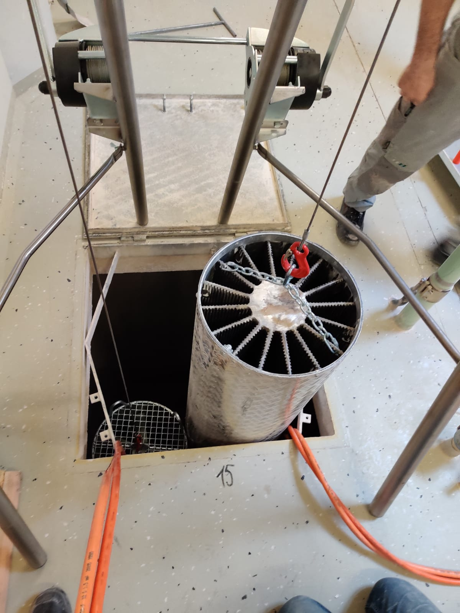
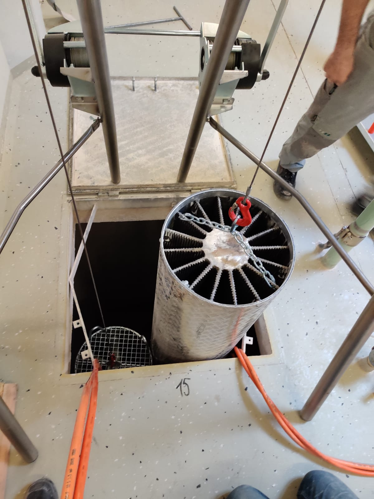

Pest control + hygiene improvement in silo bins In a silo treatment one or more ThermoNoxilo silo heaters are placed in e.g. a flour silo for pest control or hygienic improvement (mold, caking etc.). Only the air in the silo is continuously circulated and heated to a lethal temperature of approx. 55°C. The period of one treatment including the heating phase and the temperature holding phase is about 48 hours.
 

The ThermonoXilo silo heater is inserted into the silo cell through the access opening using a specially designed winch.
Metal, wood and concrete silos, from 50 m3 to 430 m3.


With the silo winch two units can be positioned independently inside the silo. All components can be disassembled into manageable sizes and stored on a pallet together with two pieces of ThermoNoxilo.
The appearance of dangerous and explosive atmospheres in a flour or even grain silo cannot be ruled out. These closed containers are classified under explosion protection regulations as ATEX Zone 21. ThermoNoxilo and the silo winch are safely designed for use in the intended conditions and approved by DEKRA. In addition to the ATEX certification (type test), the ThermoNoxilo also has the IECEx certification, common internationally.